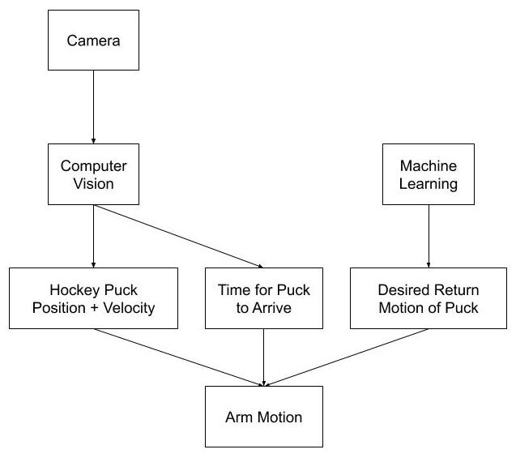
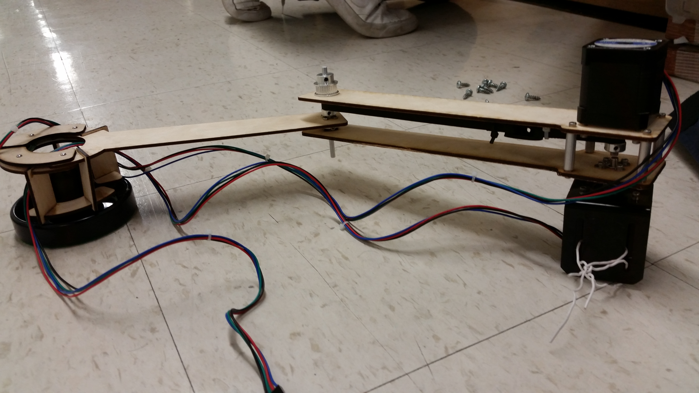

Build 18 is a week-long hackathon funded by the Electrical and Computer Engineering Department.
Summary
For CMU's weeklong hackathon, Build18, our team built a vision-guided, robotic airhockey arm. Hoping to avoid the typical human v.s single arm that has been done before, we instead imagined up a self-learning system with two collaborating arms that adjusts from its mistakes. Given only a week, we set the basic system as our first milestone. Our robot would track the hockey puck's position and velocity using computer vision and determine the necessary arm movements to handle this.
System Architecture
 The above diagrams show how different processes interact at different levels of abstraction. NOTE: There is no "Machine Learning" in this project haha. I was just naive and overhyped about ML. The calculations were derived using fundamental kinematics equations.Arm Trajectory Planning
Rather use existing packages, I decided to calculate the equations for arm movement from scratch using physics and matrices. The hardest part was to calculate the desired rotation of the two arm joints to drive the end effector's motion. We wrote all code with enough modularity to run on both the main system and in simulators(shown on the right) without any changes. Checkout details of the calculations!
Computer Vision: Puck Tracking
We use computer vision with OpenCV to detect and track the hockey puck. I have made a GUI
that guides a user in filtering out objects through HSV.
To convert pixels to physical distance, I used OpenCV's chessboard corner detection, finding the
distance between corners and measuring this with a ruler.
To deal with false detections (predicting the puck would be a some position but suddenly seeing it
jump somewhere else), I added a Kalman filter as well as a basic filter of the expected dimensions
of contours detected for the puck.
ROS System Integration
One of my main objectives was to learn Robot Operating System (ROS), which simplifies communication of data between difference processes. We used ROS to tie all our subsytems together and communicate between an Arduino and a Raspeberry Pi.
Motor Control
We used stepper motors for their accurate position-tracking and high torque. Modifying an existing API(AccelStepper), we were able to have the motor accelerate to the end position to reach a certain velocity and hit the puck at the right time.
Mechanical Arm Design
We used stepper motors for their accurate position-tracking and high torque. Modifying an existing API(AccelStepper), we were able to have the motor accelerate to the end position to reach a certain velocity and hit the puck at the right time.
Thoughts
This project is actually the inspiration for my study in household robots and human-robot interaction. It's too bad this hackathon was only a week with the project falling through afterwards. One day, I would like to build a real, functional system with complex multi robot arm cooperation and strategies.
Alvin Shek
Robotics Masters Student @ CMU
Robotics, Computer Vision, Deep Learning, Reinforcement Learning.